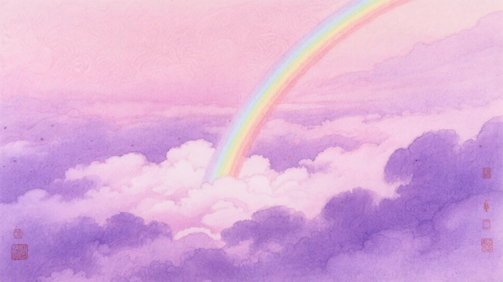
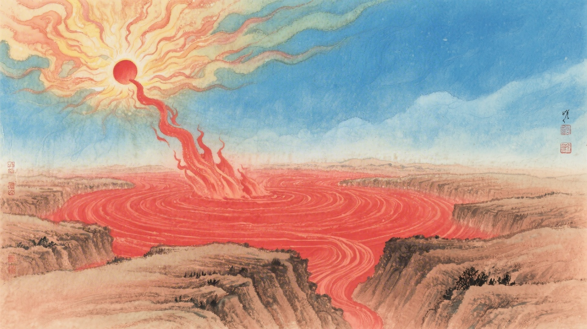
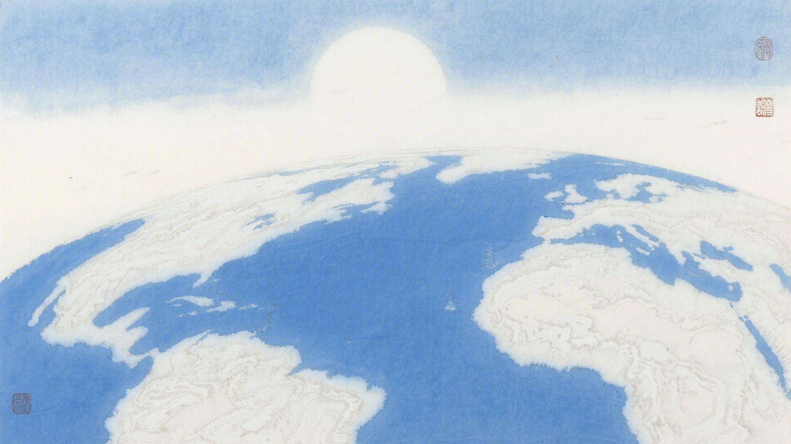
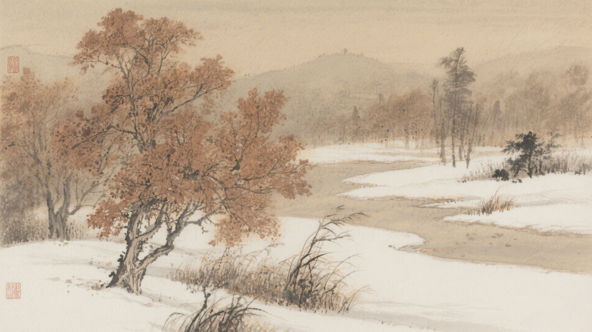
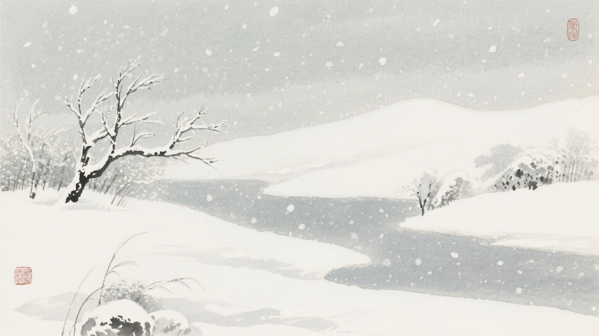

《中国传统色：故宫里的色彩美学》一书中为什么把下面这些颜色归入小雪节气？
龙膏烛、黪紫、胭脂水、胭脂紫
小红、岱赭、鹤顶红、朱殷
月白、星郎、晴山、品月
明茶褐、荆褐、驼褐、椒褐
小雪时节，彩虹藏起来了，天气上升地气下降，天地闭塞成冬。古人说小雪有三候：虹藏不见，天气上升地气下降，闭塞而成冬。这十六种颜色，便从这三候里来。
小雪的"小"，是雪还不大。偶尔飘几片，落地就化了。颜色也小小的，淡淡的，不张扬，不浓烈，像是怕惊扰了冬天的宁静。
对应：小雪节气一候"虹藏不见"的起、承、转、合四色。
色彩意象：彩虹隐去，紫气氤氲。
从红色到紫色，是彩虹消失后天空的颜色，也是小雪时节最轻柔的过渡。

对应：小雪节气二候"天气上升地气下降"的起、承、转、合四色。
色彩意象：天地分离，寒气下降。
从浅红到暗红，是冬天寒气侵袭的颜色，也是小雪时节最深沉的底色。

对应：小雪节气三候"闭塞而成冬"的起、承、转、合四色（其一）。
色彩意象：天地闭塞，冬意深沉。
从银白到淡蓝，是冬日天空的颜色，也是小雪时节最清冷的画面。

对应：小雪节气三候"闭塞而成冬"的起、承、转、合四色（其二）。
色彩意象：万物蛰伏，色彩沉静。
从淡褐到暗褐，是冬天大地的颜色，也是小雪时节最内敛的画面。

小雪这天，天阴沉沉的，偶尔飘几片雪。雪太小了，积不起来，落在地上就化了。颜色也跟着融化，红的化了，紫的化了，都化成淡淡的灰。

颜色也懂得收敛。它们不再像春夏那么张扬，不再像秋天那么斑斓。它们收起翅膀，闭上眼睛，静静地等。等大雪，等冬至，等春天。
（以上解读不代表原书观点）